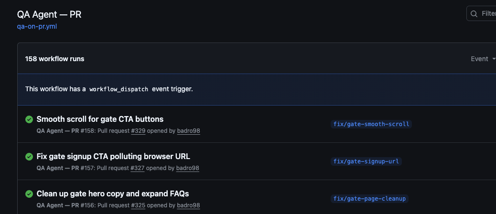
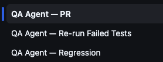

Project · QA Tooling
A QA agent that runs on every PR and flags coverage gaps before they merge. Built so nothing slips through when you're shipping fast with AI.

When you're building quickly with AI, you ship a lot of code fast. Tests pass — but that doesn't mean the right things are being tested. Coverage logic doesn't keep up with what actually changed. The gap isn't obvious until something breaks in production.
I built qa-agent out of necessity while working on pointd and BIP. I needed a second set of eyes on every PR — something that could look at what changed, check what was being tested, and flag the gaps before I merged. Not a linter, not a static analyzer — something that actually reads the diff and reasons about coverage.
The hard problem wasn't making the agent smart. It was making it unobtrusive. Early versions flagged too many low-confidence gaps, creating friction that slowed development instead of supporting it. The fix was a deliberate design choice: WARN instead of block, and open GitHub issues instead of failing the build. That kept the feedback loop fast while building an accountability trail. Coverage gaps get addressed on their own schedule, not as a hard gate on every merge.

Three workflows — PR analysis, failed test re-runs, and full regression — all running in GitHub Actions
qa-agent runs as a GitHub Actions workflow, triggered automatically on every PR. It runs a 6-step pipeline:
263 runs across pointd and BIP — every merge is checked before it lands
Every run produces a structured report. Coverage gaps are listed with context, proposed tests are described specifically, and any net-new gaps are filed as GitHub issues automatically — no manual triage required.
Decision 01
GitHub Actions, not a separate serviceKeeping it in GitHub Actions means zero additional infrastructure, zero additional cost, and it runs where the PRs already live. The config lives in the repo. Adding it to a new project is a single workflow file.
Decision 02
WARN, not BLOCKThe agent flags gaps and proposes tests — it doesn't block merges. This keeps the feedback loop fast and treats the agent as a QA collaborator, not a gatekeeper. The developer decides what's worth addressing before merging.
Decision 03
File issues, don't just commentProposed tests are filed as GitHub issues, not just posted as PR comments. Comments get buried. Issues create accountability and make it easy to prioritize coverage work separately from shipping.
The next planned enhancement is simulator-based manual testing — running automated flows against a device emulator the same way VR/MR hardware QA was done at Meta Reality Labs. The agent already handles static analysis and test execution. Connecting it to a simulator closes the loop on full end-to-end coverage, not just unit and e2e.
That experience — building repeatable, scalable QA systems for hardware that can't be continuously deployed — is what qa-agent is growing toward for web products.